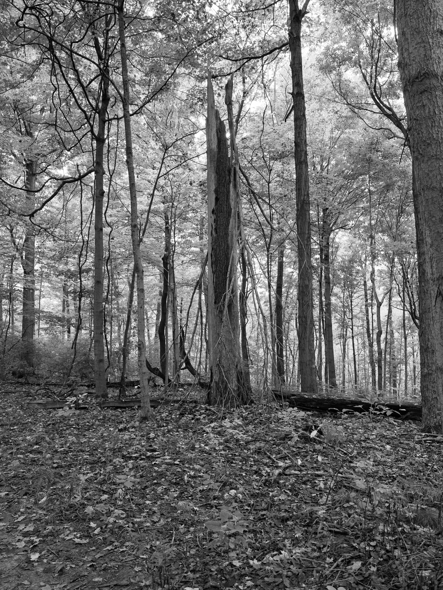
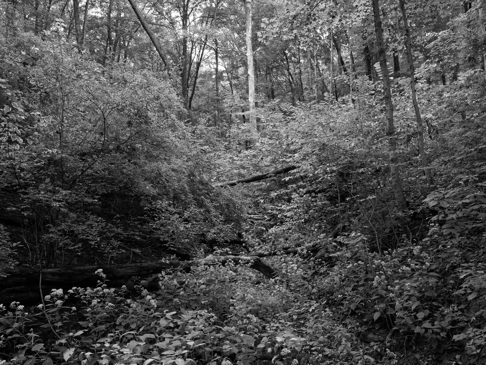
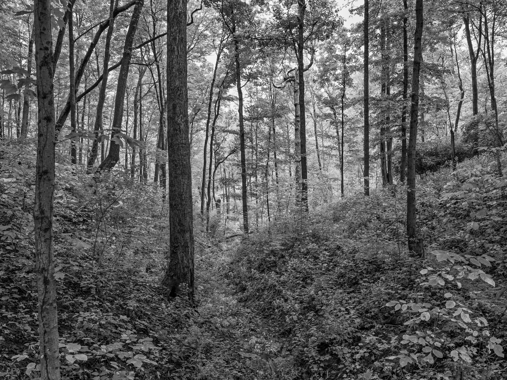

Public Lands Institute
Map
Archive
About
Mount Airy Forest
OH

Mount Airy Forest 1 · 2025-09-24
_DSF0001.jpg

Mount Airy Forest 2 · 2025-09-24
_DSF0010.jpg

Mount Airy Forest 3 · 2025-09-24
_DSF0013.jpg
View all 3 images →
← Arc of Appalachia
Clifton Gorge State Nature Preserve →